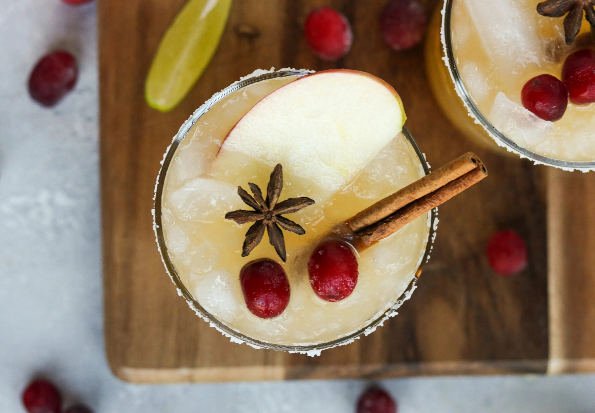

Fall Festive Margaritas

Enjoy the flavors of fall with this festive margarita recipe.
The combination of cinnamon and apple makes it a perfect
drink for the season.
Ingredients
- 2 oz Tequila
- 1 oz Cinnamon Schnapps
- 1 oz Triple Sec
- 2 oz Apple Cider
- 1 oz Fresh Lime Juice
- 1/2 oz Simple Syrup (adjust to taste)
- Cinnamon sticks and apple slices for garnish
Instructions
- Fill a shaker with ice.
- Add tequila, cinnamon schnapps, triple sec, apple cider, lime juice, and simple syrup to the shaker.
- Shake well until all ingredients are combined and the mixture is chilled.
- Strain the margarita mixture into a salt-rimmed glass filled with ice.
- Garnish with a cinnamon stick and a slice of apple.
- Serve and enjoy your fall festive margarita!